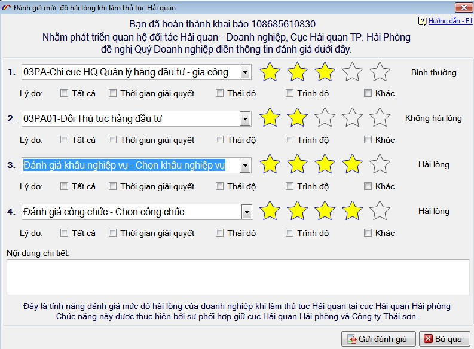
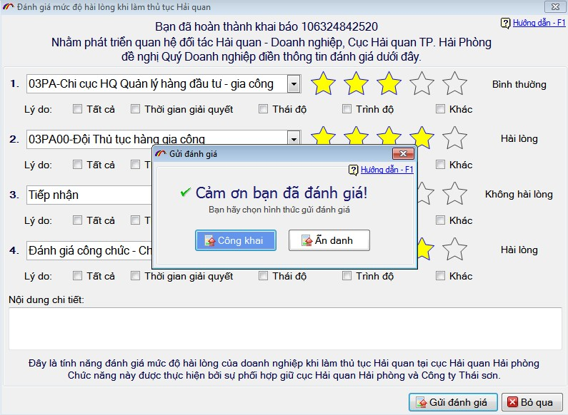
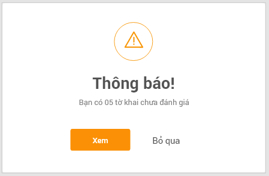
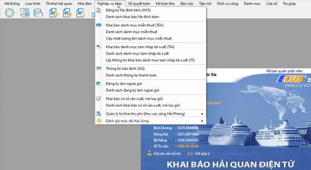

THÔNG TIN THAY ĐỔI TRONG BẢN CẬP NHẬT
(Phiên bản cập nhật ngày 05/03/2020)
Phần mềm ECUS5VNACCS2018 - Ngày phát hành 24/03/2020
Phiên bản cập nhật ngày 05/03/2020 được phát hành ngày 24/03/2020 được bổ sung chức năng Đánh giá sự hài lòng của doanh nghiệp khi làm thủ tục Hải quan:
Nhằm nâng cao chất lượng phục vụ của cán bộ hải quan và phát triển mối quan hệ đối tác Hải quan - Doanh nghiệp, Cục Hải quan thành phố Hải Phòng phối hợp với Công ty phát triển Công nghệ Thái Sơn xây dựng chức năng đánh giá mức độ hài lòng của doanh nghiệp đối với các Chi cục Hải quan trong quá trình giải quyết thủ tục Hải quan trên phần mềm khai báo Hải quan ECUS VNACCS.
Quy trình đánh giá
Bước 1: Doanh nghiệp tiến hành khai báo thủ tục hải quan cho tờ khai và gửi tờ khai đến hệ thống VNACCS/VCIS, sau đó lấy thông tin cấp phép thông quan/hoàn thành thủ tục hải quan cho tờ khai.
Bước 2: Hệ thống hiển thị thông tin đánh giá trên mỗi tờ khai:

Bước 3: Nếu doanh nghiệp đồng ý đánh giá tờ khai thì lựa chọn:
- Mức độ hài lòng tương ứng với số lượng *:
5*: Rất hài lòng
4*: Hài lòng
3*: Bình thường
2*: Không hài lòng
1*: Rất không hài lòng
- Lí do hài lòng hoặc không hài lòng (có thể chọn một hoặc nhiều).
Bước 4: Sau khi đánh giá xong doanh nghiệp thực hiện gửi đánh giá, lựa chọn gửi dưới hình thức Công khai hoặc Ẩn danh:

Bước 5: Tại bước 2, nếu doanh nghiệp không thực hiện đánh giá ngay thì lựa chọn bỏ qua, hệ thống hiển thị cảnh báo:

Bước 6: Để xem các tờ khai chưa đánh giá, doanh nghiệp có thể lựa chọn "Xem" ở bước 5, hoặc lựa chọn chức năng "Đánh giá mức độ hài lòng" ở menu Nghiệp vụ khác:

Bản quyền © thuộc về Công ty TNHH Phát triển công nghệ Thái Sơn